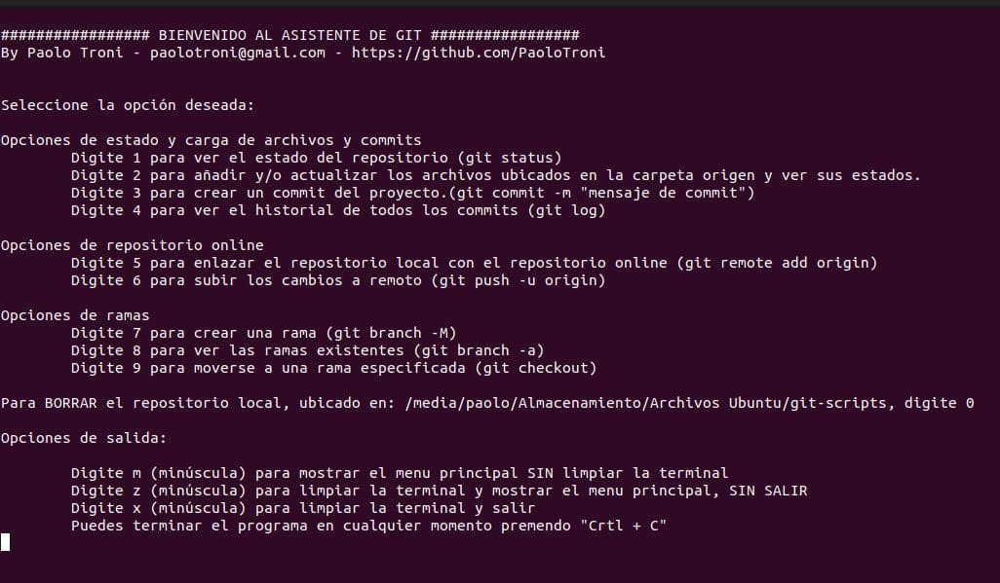
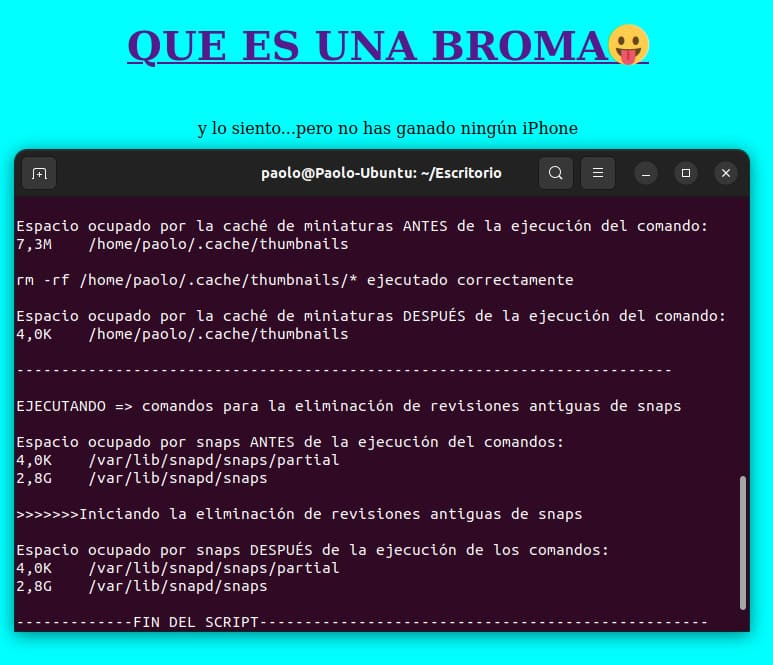

<section>
  <article>
    <h2>Proyectos</h2>
    <p>
      Sigue un listado de los proyectos en que he trabajado y intenciones para
      el futuro:
    </p>
    <ul>
      <li>
        <a href="proyectos_es/portfolio.html">
          
          <h3>Portfolio multi-idiomas</h3></a
        >
        <p>Este mismo portfolio, que está elaborado con HTML, CSS y JS</p>
        <a href="https://github.com/PaoloTroni" target="_blank">Repositorio</a>
      </li>
      <li>
        <a href="proyectos_es/asistente-git.html">
          
          <h3>Asistente de GIT</h3></a
        >
        <p>
          Un script escrito en Bash, para facilitar y agilizar operaciones
          básicas de GIT.
        </p>
        <a href="https://github.com/PaoloTroni/git-scripts" target="_blank"
          >Repositorio</a
        >
      </li>

      <li>
        <a href="proyectos_es/social-link.html">
          
          <h3>Social Link</h3></a
        >
        <p>
          Una rede social para compartir enlaces interesantes. Para ese proyecto
          se ha utilizado Node.js, MySQL, CSS y React.
        </p>
        <a href="https://github.com/PaoloTroni/social-link" target="_blank"
          >Repositorio</a
        >
      </li>

      <li>
        <a href="proyectos_es/bateria-virtual.html">
          
          <h3>Batería Virtual</h3></a
        >
        <p>
          Un aplicativo web realizado con HTML5, CSS3 y JS donde te puedes
          divertir tocando una batería virtual. Incluso puedes grabar una
          secuencia de ritmos. Hay dos versiones gráficas.
        </p>
        <a href="https://github.com/saidinassima/Bateria" target="_blank"
          >Repositorio</a
        >
        <a href="https://bateria-theta.vercel.app/" target="_blank"
          >Demo gráfica <strong>"fuego"</strong></a
        >
        <a
          href="https://planeta-bateria-bateria-virtual.vercel.app/"
          target="_blank"
          >Demo gráfica <strong>"planeta"</strong></a
        >
      </li>

      <li>
        <a href="proyectos_es/cosillas-divertidas.html">
          
          <h3>Cosillas divertidas y utilidades, hechos con JS y Bash</h3></a
        >
      </li>
      <li>
        <a href="proyectos_es/maqueta-gestion-musical.html">
          
          <h3>APP de Gestión musical (maqueta)</h3></a
        >
        <p>
          Maqueta de una plataforma para la gestión de las actividades de las
          escuelas de música (en ámbito nacional) de una iglesia evangélica.
          (proyecto privado).
        </p>
      </li>
      <li>
        <a href="proyectos_es/otros-proyectos.html">
          
          <h3>Otros proyectos no relacionados con la programación</h3></a
        >
      </li>

      <li>
        <a href="proyectos_es/proyectos-futuros.html"
          >
          <h3>Proyectos futuros e intereses</h3></a
        >
      </li>
    </ul>
  </article>
</section>
